Last updated: 2022-03-02
Checks: 5 2
Knit directory: cTWAS_analysis/
This reproducible R Markdown analysis was created with workflowr (version 1.7.0). The Checks tab describes the reproducibility checks that were applied when the results were created. The Past versions tab lists the development history.
The R Markdown file has unstaged changes. To know which version of the R Markdown file created these results, you’ll want to first commit it to the Git repo. If you’re still working on the analysis, you can ignore this warning. When you’re finished, you can run wflow_publish to commit the R Markdown file and build the HTML.
Great job! The global environment was empty. Objects defined in the global environment can affect the analysis in your R Markdown file in unknown ways. For reproduciblity it’s best to always run the code in an empty environment.
The command set.seed(20211220) was run prior to running the code in the R Markdown file. Setting a seed ensures that any results that rely on randomness, e.g. subsampling or permutations, are reproducible.
Great job! Recording the operating system, R version, and package versions is critical for reproducibility.
Nice! There were no cached chunks for this analysis, so you can be confident that you successfully produced the results during this run.
Using absolute paths to the files within your workflowr project makes it difficult for you and others to run your code on a different machine. Change the absolute path(s) below to the suggested relative path(s) to make your code more reproducible.
| absolute | relative |
|---|---|
| /project2/xinhe/shengqian/cTWAS/cTWAS_analysis/data/ | data |
| /project2/xinhe/shengqian/cTWAS/cTWAS_analysis/code/ctwas_config.R | code/ctwas_config.R |
Great! You are using Git for version control. Tracking code development and connecting the code version to the results is critical for reproducibility.
The results in this page were generated with repository version 35c93ea. See the Past versions tab to see a history of the changes made to the R Markdown and HTML files.
Note that you need to be careful to ensure that all relevant files for the analysis have been committed to Git prior to generating the results (you can use wflow_publish or wflow_git_commit). workflowr only checks the R Markdown file, but you know if there are other scripts or data files that it depends on. Below is the status of the Git repository when the results were generated:
Ignored files:
Ignored: .ipynb_checkpoints/
Ignored: data/AF/
Untracked files:
Untracked: Rplot.png
Untracked: analysis/.ipynb_checkpoints/
Untracked: code/.ipynb_checkpoints/
Untracked: code/AF_out/
Untracked: code/Autism_out/
Untracked: code/BMI_S_out/
Untracked: code/BMI_out/
Untracked: code/Glucose_out/
Untracked: code/LDL_S_out/
Untracked: code/SCZ_S_out/
Untracked: code/SCZ_out/
Untracked: code/T2D_out/
Untracked: code/ctwas_config.R
Untracked: code/mapping.R
Untracked: code/out/
Untracked: code/run_AF_analysis.sbatch
Untracked: code/run_AF_analysis.sh
Untracked: code/run_AF_ctwas_rss_LDR.R
Untracked: code/run_Autism_analysis.sbatch
Untracked: code/run_Autism_analysis.sh
Untracked: code/run_Autism_ctwas_rss_LDR.R
Untracked: code/run_BMI_analysis.sbatch
Untracked: code/run_BMI_analysis.sh
Untracked: code/run_BMI_analysis_S.sbatch
Untracked: code/run_BMI_analysis_S.sh
Untracked: code/run_BMI_ctwas_rss_LDR.R
Untracked: code/run_BMI_ctwas_rss_LDR_S.R
Untracked: code/run_Glucose_analysis.sbatch
Untracked: code/run_Glucose_analysis.sh
Untracked: code/run_Glucose_ctwas_rss_LDR.R
Untracked: code/run_LDL_analysis_S.sbatch
Untracked: code/run_LDL_analysis_S.sh
Untracked: code/run_LDL_ctwas_rss_LDR_S.R
Untracked: code/run_SCZ_analysis.sbatch
Untracked: code/run_SCZ_analysis.sh
Untracked: code/run_SCZ_analysis_S.sbatch
Untracked: code/run_SCZ_analysis_S.sh
Untracked: code/run_SCZ_ctwas_rss_LDR.R
Untracked: code/run_SCZ_ctwas_rss_LDR_S.R
Untracked: code/run_T2D_analysis.sbatch
Untracked: code/run_T2D_analysis.sh
Untracked: code/run_T2D_ctwas_rss_LDR.R
Untracked: code/wflow_build-18162038.err
Untracked: code/wflow_build-18162038.out
Untracked: code/wflow_build.R
Untracked: code/wflow_build.sbatch
Untracked: data/.ipynb_checkpoints/
Untracked: data/Autism/
Untracked: data/BMI/
Untracked: data/BMI_S/
Untracked: data/Glucose/
Untracked: data/LDL_S/
Untracked: data/SCZ/
Untracked: data/SCZ_S/
Untracked: data/T2D/
Untracked: data/TEST/
Untracked: data/UKBB/
Untracked: data/UKBB_SNPs_Info.text
Untracked: data/gene_OMIM.txt
Untracked: data/gene_pip_0.8.txt
Untracked: data/mashr_Heart_Atrial_Appendage.db
Untracked: data/mashr_sqtl/
Untracked: data/summary_known_genes_annotations.xlsx
Untracked: data/untitled.txt
Unstaged changes:
Modified: analysis/SCZ_Brain_Putamen_basal_ganglia.Rmd
Note that any generated files, e.g. HTML, png, CSS, etc., are not included in this status report because it is ok for generated content to have uncommitted changes.
These are the previous versions of the repository in which changes were made to the R Markdown (analysis/SCZ_Brain_Putamen_basal_ganglia.Rmd) and HTML (docs/SCZ_Brain_Putamen_basal_ganglia.html) files. If you’ve configured a remote Git repository (see ?wflow_git_remote), click on the hyperlinks in the table below to view the files as they were in that past version.
| File | Version | Author | Date | Message |
|---|---|---|---|---|
| Rmd | ed11e40 | sq-96 | 2022-03-02 | update |
| html | ed11e40 | sq-96 | 2022-03-02 | update |
| Rmd | f93f4b7 | sq-96 | 2022-03-02 | update |
| html | f93f4b7 | sq-96 | 2022-03-02 | update |
| Rmd | 08b7e6f | sq-96 | 2022-03-02 | update |
| html | 08b7e6f | sq-96 | 2022-03-02 | update |
| html | 3f6d410 | sq-96 | 2022-03-02 | update |
| Rmd | 18287f5 | sq-96 | 2022-03-02 | update |
| html | 75a1466 | sq-96 | 2022-02-27 | Build site. |
| Rmd | 1c69dd2 | sq-96 | 2022-02-27 | update |
| html | ff6403a | sq-96 | 2022-02-27 | Build site. |
| Rmd | 3dd5b4c | sq-96 | 2022-02-27 | update |
#number of imputed weights
nrow(qclist_all)[1] 11274#number of imputed weights by chromosome
table(qclist_all$chr)
1 2 3 4 5 6 7 8 9 10 11 12 13 14 15 16
1123 795 659 440 534 593 558 410 421 464 669 651 228 384 383 516
17 18 19 20 21 22
678 179 848 340 123 278 #number of imputed weights without missing variants
sum(qclist_all$nmiss==0)[1] 8904#proportion of imputed weights without missing variants
mean(qclist_all$nmiss==0)[1] 0.7898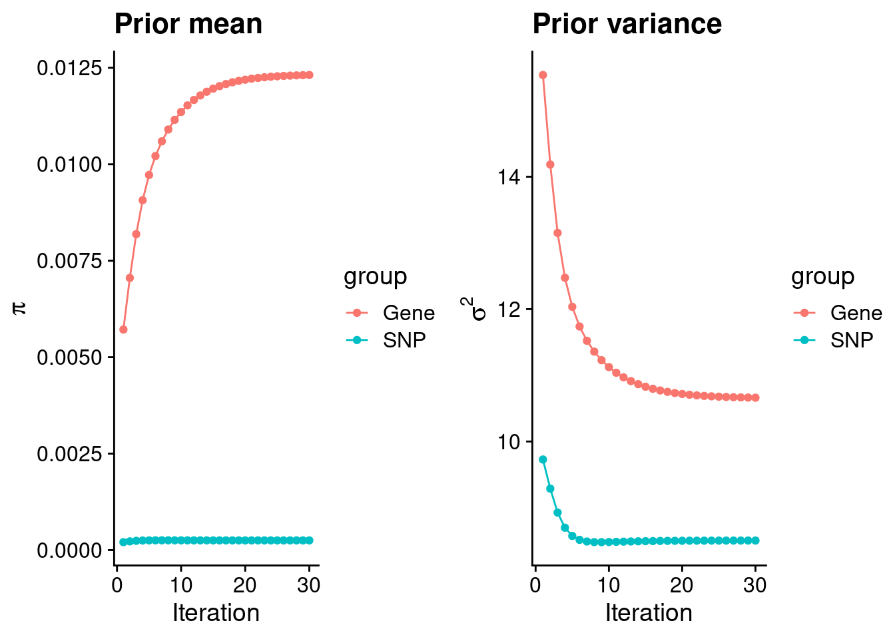
| Version | Author | Date |
|---|---|---|
| ff6403a | sq-96 | 2022-02-27 |
#estimated group prior
estimated_group_prior <- group_prior_rec[,ncol(group_prior_rec)]
names(estimated_group_prior) <- c("gene", "snp")
estimated_group_prior["snp"] <- estimated_group_prior["snp"]*thin #adjust parameter to account for thin argument
print(estimated_group_prior) gene snp
0.0123138 0.0002506 #estimated group prior variance
estimated_group_prior_var <- group_prior_var_rec[,ncol(group_prior_var_rec)]
names(estimated_group_prior_var) <- c("gene", "snp")
print(estimated_group_prior_var) gene snp
10.662 8.503 #report sample size
print(sample_size)[1] 82315#report group size
group_size <- c(nrow(ctwas_gene_res), n_snps)
print(group_size)[1] 11274 7573890#estimated group PVE
estimated_group_pve <- estimated_group_prior_var*estimated_group_prior*group_size/sample_size #check PVE calculation
names(estimated_group_pve) <- c("gene", "snp")
print(estimated_group_pve) gene snp
0.01798 0.19610 #compare sum(PIP*mu2/sample_size) with above PVE calculation
c(sum(ctwas_gene_res$PVE),sum(ctwas_snp_res$PVE))[1] 0.1204 1.4388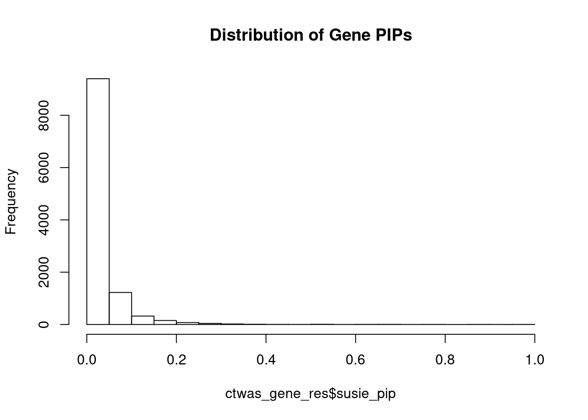
| Version | Author | Date |
|---|---|---|
| ff6403a | sq-96 | 2022-02-27 |
genename region_tag susie_pip mu2 PVE z num_eqtl
3448 CRHR1 17_27 0.9977 3537.44 0.0428738 3.362 1
10867 ZNF823 19_10 0.9813 29.49 0.0003516 5.455 1
4092 FEZF1 7_74 0.9787 28.51 0.0003390 -5.314 1
11990 AC012074.2 2_15 0.9012 21.92 0.0002399 4.623 1
8791 GNG12 1_42 0.8876 22.45 0.0002421 4.526 2
3043 SF3B1 2_117 0.8595 43.81 0.0004574 6.725 1
11945 HIST1H2BN 6_21 0.7887 91.05 0.0008723 10.773 1
6321 PLBD2 12_68 0.7749 20.26 0.0001907 3.986 1
8798 FUT9 6_65 0.7434 29.72 0.0002684 5.427 1
7435 SERPINI1 3_103 0.6967 20.40 0.0001726 -4.038 1
433 ARID1B 6_102 0.6827 22.81 0.0001892 -3.907 1
13621 LINC02033 3_27 0.6750 42.14 0.0003455 -6.688 1
11497 AS3MT 10_66 0.6629 47.24 0.0003805 8.510 2
4444 REEP2 5_82 0.6544 27.96 0.0002223 5.204 1
10737 PCBP2 12_33 0.6333 22.13 0.0001703 4.202 1
11110 LIN28B-AS1 6_70 0.6276 23.11 0.0001762 -4.630 2
3935 KLC1 14_54 0.6130 41.31 0.0003076 7.069 1
11329 ITSN1 21_14 0.6071 24.37 0.0001798 3.885 1
5721 CEP170 1_128 0.5858 24.35 0.0001733 -4.678 1
905 NT5C2 10_66 0.5494 40.33 0.0002691 -8.066 1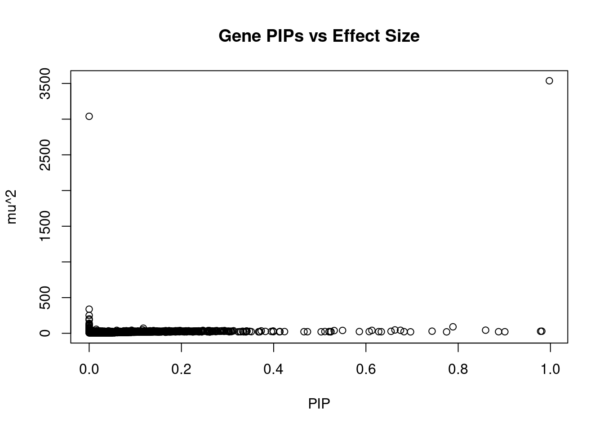
| Version | Author | Date |
|---|---|---|
| ff6403a | sq-96 | 2022-02-27 |
genename region_tag susie_pip mu2 PVE z num_eqtl
3448 CRHR1 17_27 9.977e-01 3537.44 4.287e-02 3.36232 1
10167 ARL17A 17_27 0.000e+00 3039.45 0.000e+00 -2.78513 2
6964 ARHGAP27 17_27 0.000e+00 338.09 0.000e+00 0.34014 1
12064 HLA-DQA2 6_26 1.865e-14 251.01 5.688e-17 0.21639 1
10691 HLA-DQA1 6_26 2.209e-14 201.77 5.415e-17 3.44601 1
12119 LY6G5B 6_26 7.245e-09 185.79 1.635e-11 -7.00014 1
10035 FMNL1 17_27 0.000e+00 140.29 0.000e+00 -0.66376 1
11190 MSH5 6_26 1.045e-04 127.66 1.621e-07 7.59028 2
4897 NMT1 17_27 0.000e+00 119.81 0.000e+00 2.85333 1
8857 DCAKD 17_27 0.000e+00 115.79 0.000e+00 -2.99967 1
9689 ACBD4 17_27 0.000e+00 105.48 0.000e+00 0.12846 2
11639 C4B 6_26 5.842e-13 102.32 7.262e-16 -4.92818 1
11945 HIST1H2BN 6_21 7.887e-01 91.05 8.723e-04 10.77288 1
9507 HLA-DQB1 6_26 6.661e-15 85.64 6.930e-18 4.33946 1
10958 HLA-DRB5 6_26 4.996e-15 75.21 4.565e-18 2.07566 1
10276 HEXIM1 17_27 0.000e+00 73.25 0.000e+00 -2.84515 1
2412 GOSR2 17_27 0.000e+00 72.14 0.000e+00 -2.50963 1
13230 RP1-86C11.7 6_21 1.175e-01 71.63 1.022e-04 9.03322 1
11877 CYP21A2 6_26 1.862e-13 63.59 1.438e-16 -0.01504 1
10244 BTN3A2 6_20 1.530e-02 56.53 1.051e-05 8.19734 3 genename region_tag susie_pip mu2 PVE z num_eqtl
3448 CRHR1 17_27 0.9977 3537.44 0.0428738 3.362 1
11945 HIST1H2BN 6_21 0.7887 91.05 0.0008723 10.773 1
3043 SF3B1 2_117 0.8595 43.81 0.0004574 6.725 1
11497 AS3MT 10_66 0.6629 47.24 0.0003805 8.510 2
10867 ZNF823 19_10 0.9813 29.49 0.0003516 5.455 1
13621 LINC02033 3_27 0.6750 42.14 0.0003455 -6.688 1
4092 FEZF1 7_74 0.9787 28.51 0.0003390 -5.314 1
3935 KLC1 14_54 0.6130 41.31 0.0003076 7.069 1
905 NT5C2 10_66 0.5494 40.33 0.0002691 -8.066 1
8798 FUT9 6_65 0.7434 29.72 0.0002684 5.427 1
2590 MDK 11_28 0.5312 38.43 0.0002480 -6.357 1
8791 GNG12 1_42 0.8876 22.45 0.0002421 4.526 2
11990 AC012074.2 2_15 0.9012 21.92 0.0002399 4.623 1
4444 REEP2 5_82 0.6544 27.96 0.0002223 5.204 1
6321 PLBD2 12_68 0.7749 20.26 0.0001907 3.986 1
433 ARID1B 6_102 0.6827 22.81 0.0001892 -3.907 1
11329 ITSN1 21_14 0.6071 24.37 0.0001798 3.885 1
11110 LIN28B-AS1 6_70 0.6276 23.11 0.0001762 -4.630 2
5721 CEP170 1_128 0.5858 24.35 0.0001733 -4.678 1
7435 SERPINI1 3_103 0.6967 20.40 0.0001726 -4.038 1 genename region_tag susie_pip mu2 PVE z num_eqtl
11945 HIST1H2BN 6_21 7.887e-01 91.05 8.723e-04 10.773 1
13230 RP1-86C11.7 6_21 1.175e-01 71.63 1.022e-04 9.033 1
11497 AS3MT 10_66 6.629e-01 47.24 3.805e-04 8.510 2
10244 BTN3A2 6_20 1.530e-02 56.53 1.051e-05 8.197 3
905 NT5C2 10_66 5.494e-01 40.33 2.691e-04 -8.066 1
6164 CNNM2 10_66 7.538e-02 34.34 3.145e-05 -7.691 1
11190 MSH5 6_26 1.045e-04 127.66 1.621e-07 7.590 2
3935 KLC1 14_54 6.130e-01 41.31 3.076e-04 7.069 1
12119 LY6G5B 6_26 7.245e-09 185.79 1.635e-11 -7.000 1
10392 ZSCAN23 6_22 1.162e-01 47.98 6.775e-05 -6.789 2
3043 SF3B1 2_117 8.595e-01 43.81 4.574e-04 6.725 1
10545 ZKSCAN3 6_22 2.269e-02 33.66 9.278e-06 6.709 1
13621 LINC02033 3_27 6.750e-01 42.14 3.455e-04 -6.688 1
10732 ZSCAN26 6_22 1.608e-02 37.56 7.336e-06 6.658 3
6302 ABCB9 12_75 7.651e-03 38.72 3.599e-06 6.404 1
2590 MDK 11_28 5.312e-01 38.43 2.480e-04 -6.357 1
5872 CCDC39 3_111 2.934e-01 38.48 1.372e-04 -6.338 1
2929 FXR1 3_111 1.977e-01 37.68 9.050e-05 6.308 1
1212 PPP1R13B 14_54 9.198e-02 42.90 4.793e-05 6.297 1
13228 U91328.19 6_20 5.982e-02 41.81 3.038e-05 -6.254 1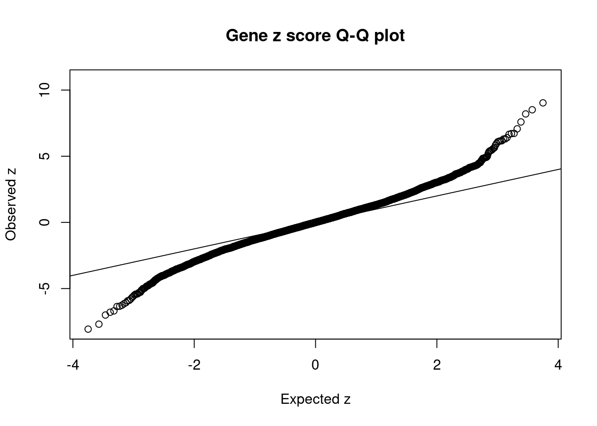
| Version | Author | Date |
|---|---|---|
| ff6403a | sq-96 | 2022-02-27 |
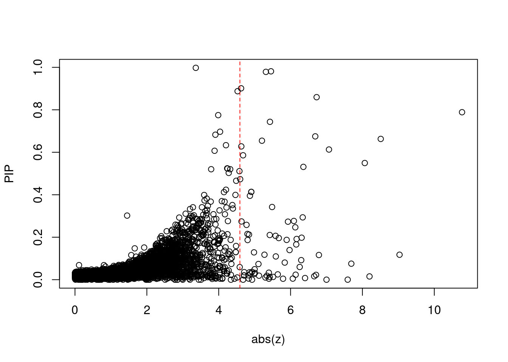
| Version | Author | Date |
|---|---|---|
| ff6403a | sq-96 | 2022-02-27 |
[1] 0.006741 genename region_tag susie_pip mu2 PVE z num_eqtl
11945 HIST1H2BN 6_21 7.887e-01 91.05 8.723e-04 10.773 1
13230 RP1-86C11.7 6_21 1.175e-01 71.63 1.022e-04 9.033 1
11497 AS3MT 10_66 6.629e-01 47.24 3.805e-04 8.510 2
10244 BTN3A2 6_20 1.530e-02 56.53 1.051e-05 8.197 3
905 NT5C2 10_66 5.494e-01 40.33 2.691e-04 -8.066 1
6164 CNNM2 10_66 7.538e-02 34.34 3.145e-05 -7.691 1
11190 MSH5 6_26 1.045e-04 127.66 1.621e-07 7.590 2
3935 KLC1 14_54 6.130e-01 41.31 3.076e-04 7.069 1
12119 LY6G5B 6_26 7.245e-09 185.79 1.635e-11 -7.000 1
10392 ZSCAN23 6_22 1.162e-01 47.98 6.775e-05 -6.789 2
3043 SF3B1 2_117 8.595e-01 43.81 4.574e-04 6.725 1
10545 ZKSCAN3 6_22 2.269e-02 33.66 9.278e-06 6.709 1
13621 LINC02033 3_27 6.750e-01 42.14 3.455e-04 -6.688 1
10732 ZSCAN26 6_22 1.608e-02 37.56 7.336e-06 6.658 3
6302 ABCB9 12_75 7.651e-03 38.72 3.599e-06 6.404 1
2590 MDK 11_28 5.312e-01 38.43 2.480e-04 -6.357 1
5872 CCDC39 3_111 2.934e-01 38.48 1.372e-04 -6.338 1
2929 FXR1 3_111 1.977e-01 37.68 9.050e-05 6.308 1
1212 PPP1R13B 14_54 9.198e-02 42.90 4.793e-05 6.297 1
13228 U91328.19 6_20 5.982e-02 41.81 3.038e-05 -6.254 1#number of genes for gene set enrichment
length(genes)[1] 27Uploading data to Enrichr... Done.
Querying GO_Biological_Process_2021... Done.
Querying GO_Cellular_Component_2021... Done.
Querying GO_Molecular_Function_2021... Done.
Parsing results... Done.
[1] "GO_Biological_Process_2021"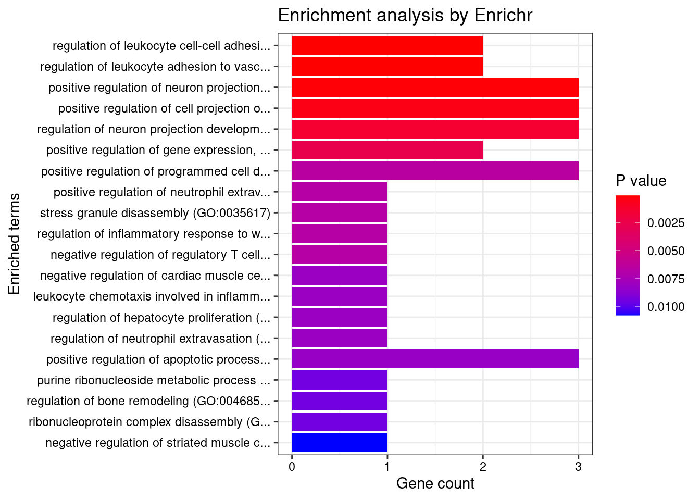
| Version | Author | Date |
|---|---|---|
| ff6403a | sq-96 | 2022-02-27 |
Term
1 regulation of leukocyte cell-cell adhesion (GO:1903037)
2 regulation of leukocyte adhesion to vascular endothelial cell (GO:1904994)
3 positive regulation of neuron projection development (GO:0010976)
4 positive regulation of cell projection organization (GO:0031346)
Overlap Adjusted.P.value Genes
1 2/12 0.01811 FUT9;MDK
2 2/13 0.01811 FUT9;MDK
3 3/88 0.01985 FUT9;MDK;SERPINI1
4 3/117 0.03438 FUT9;MDK;SERPINI1
[1] "GO_Cellular_Component_2021"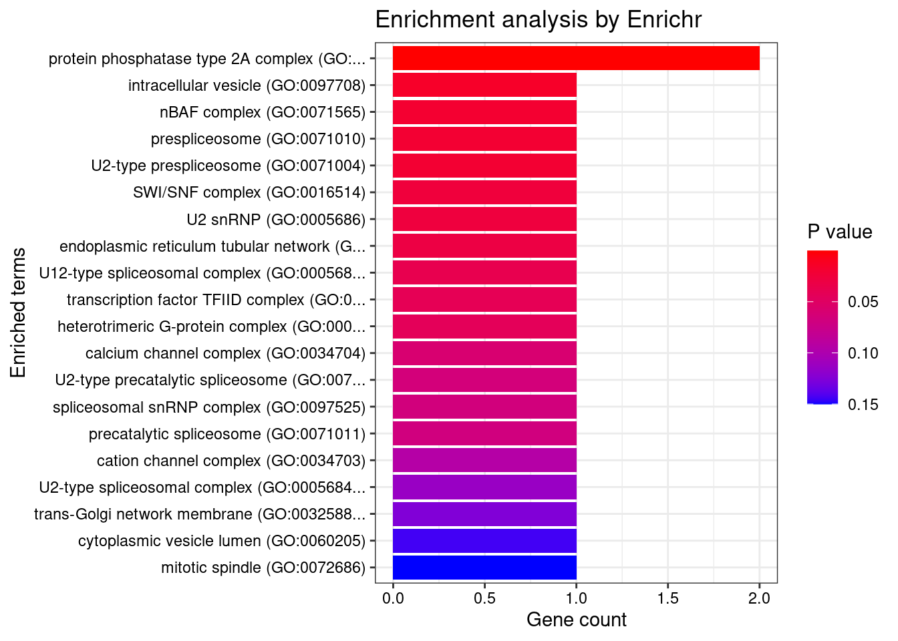
| Version | Author | Date |
|---|---|---|
| ff6403a | sq-96 | 2022-02-27 |
Term Overlap Adjusted.P.value
1 protein phosphatase type 2A complex (GO:0000159) 2/17 0.008722
Genes
1 PTPA;PPP2R5B
[1] "GO_Molecular_Function_2021"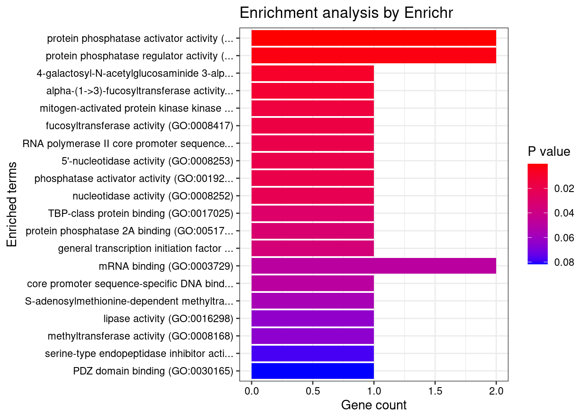
| Version | Author | Date |
|---|---|---|
| ff6403a | sq-96 | 2022-02-27 |
Term Overlap Adjusted.P.value
1 protein phosphatase activator activity (GO:0072542) 2/13 0.007189
Genes
1 PTPA;PPP2R5B Description FDR Ratio
3 Anxiety Disorders 0.02009 2/13
60 Anxiety States, Neurotic 0.02009 2/13
94 Anxiety neurosis (finding) 0.02009 2/13
103 Familial encephalopathy with neuroserpin inclusion bodies 0.02009 1/13
113 SPASTIC PARAPLEGIA 72, AUTOSOMAL RECESSIVE 0.02009 1/13
114 SPASTIC PARAPLEGIA 72, AUTOSOMAL DOMINANT 0.02009 1/13
116 SPASTIC PARAPLEGIA 45, AUTOSOMAL RECESSIVE 0.02009 1/13
117 CONE-ROD DYSTROPHY 20 0.02009 1/13
118 HYPOGONADOTROPIC HYPOGONADISM 22 WITH OR WITHOUT ANOSMIA 0.02009 1/13
28 Neoplasms, Glandular and Epithelial 0.02125 1/13
BgRatio
3 44/9703
60 44/9703
94 44/9703
103 1/9703
113 1/9703
114 1/9703
116 1/9703
117 1/9703
118 1/9703
28 2/9703Loading the functional categories...
Loading the ID list...
Loading the reference list...
Performing the enrichment analysis...Warning in oraEnrichment(interestGeneList, referenceGeneList, geneSet, minNum =
minNum, : No significant gene set is identified based on FDR 0.05!NULLWarning: ggrepel: 6 unlabeled data points (too many overlaps). Consider
increasing max.overlaps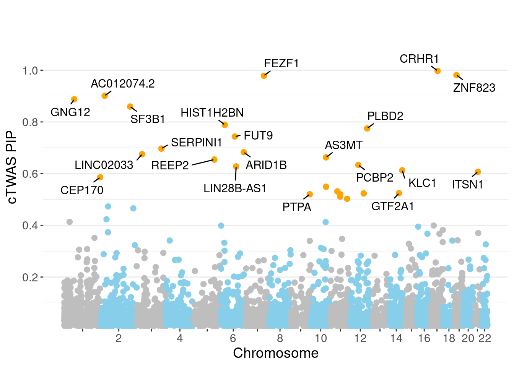
| Version | Author | Date |
|---|---|---|
| ff6403a | sq-96 | 2022-02-27 |
#number of genes in known annotations
print(length(known_annotations))[1] 130#number of genes in known annotations with imputed expression
print(sum(known_annotations %in% ctwas_gene_res$genename))[1] 63#significance threshold for TWAS
print(sig_thresh)[1] 4.59#number of ctwas genes
length(ctwas_genes)[1] 6#number of TWAS genes
length(twas_genes)[1] 76#show novel genes (ctwas genes with not in TWAS genes)
ctwas_gene_res[ctwas_gene_res$genename %in% novel_genes,report_cols] genename region_tag susie_pip mu2 PVE z num_eqtl
8791 GNG12 1_42 0.8876 22.45 0.0002421 4.526 2
3448 CRHR1 17_27 0.9977 3537.44 0.0428738 3.362 1#sensitivity / recall
print(sensitivity) ctwas TWAS
0.02308 0.06923 #specificity
print(specificity) ctwas TWAS
0.9997 0.9940 #precision / PPV
print(precision) ctwas TWAS
0.5000 0.1184 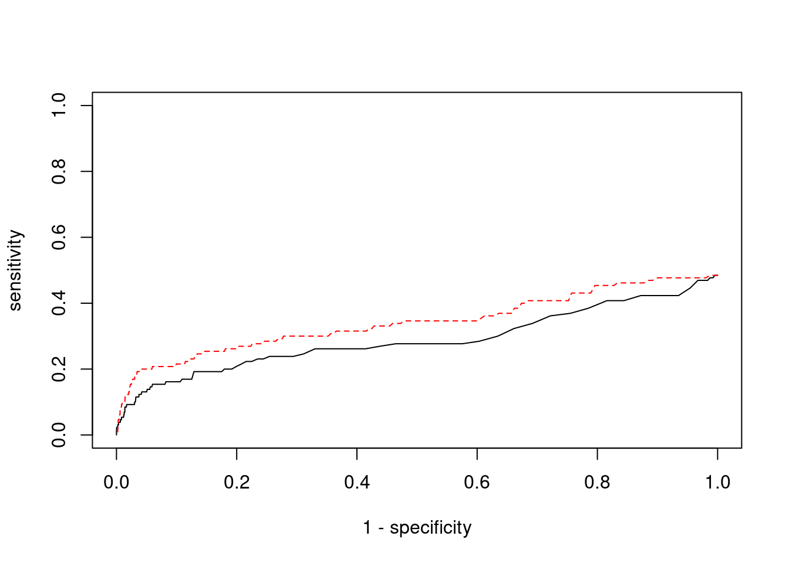
#number of genes in known annotations (with imputed expression)
print(length(known_annotations))[1] 63#number of bystander genes (with imputed expression)
print(length(unrelated_genes))[1] 830#subset results to genes in known annotations or bystanders
ctwas_gene_res_subset <- ctwas_gene_res[ctwas_gene_res$genename %in% c(known_annotations, unrelated_genes),]
#assign ctwas and TWAS genes
ctwas_genes <- ctwas_gene_res_subset$genename[ctwas_gene_res_subset$susie_pip>0.8]
twas_genes <- ctwas_gene_res_subset$genename[abs(ctwas_gene_res_subset$z)>sig_thresh]
#significance threshold for TWAS
print(sig_thresh)[1] 4.59#number of ctwas genes (in known annotations or bystanders)
length(ctwas_genes)[1] 3#number of TWAS genes (in known annotations or bystanders)
length(twas_genes)[1] 20#sensitivity / recall
sensitivity ctwas TWAS
0.04762 0.14286 #specificity / (1 - False Positive Rate)
specificity ctwas TWAS
1.0000 0.9867 #precision / PPV / (1 - False Discovery Rate)
precisionctwas TWAS
1.00 0.45 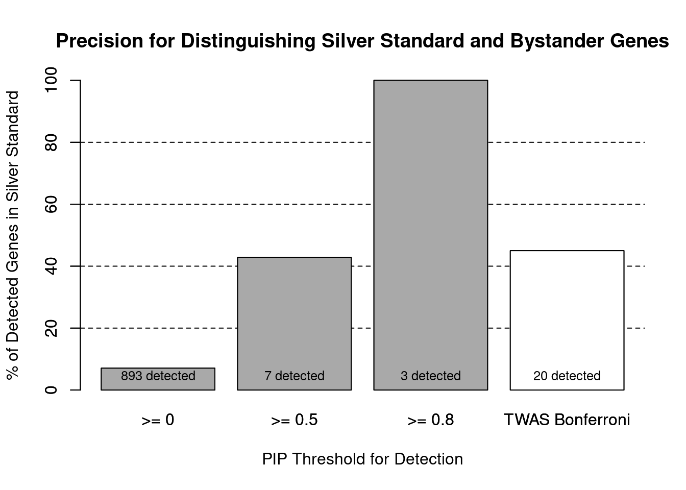
| Version | Author | Date |
|---|---|---|
| 3f6d410 | sq-96 | 2022-03-02 |
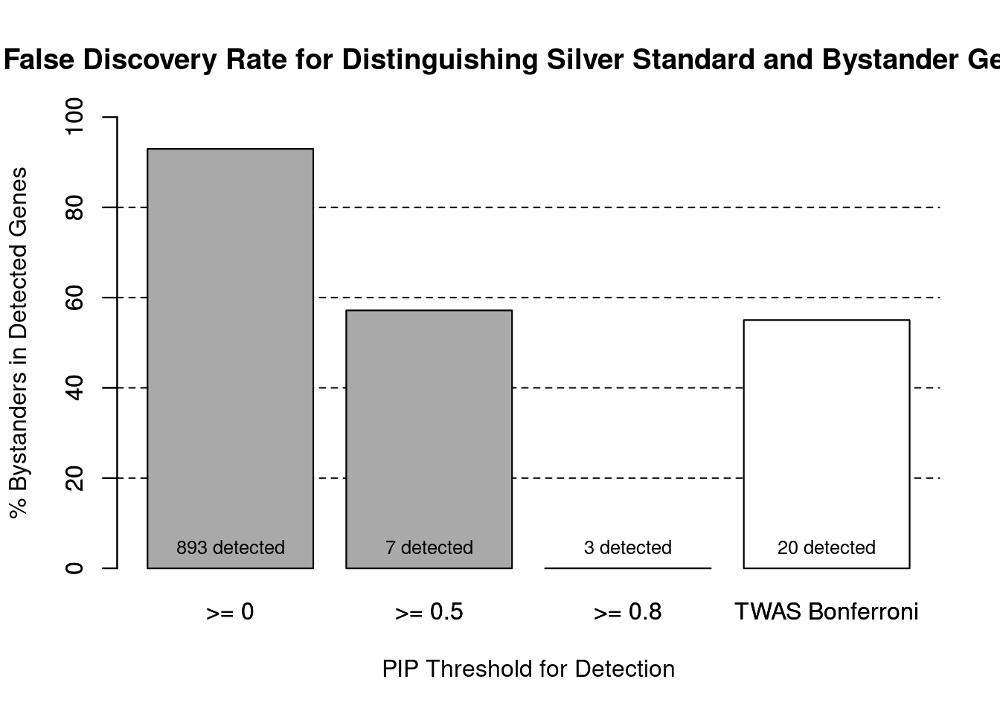
| Version | Author | Date |
|---|---|---|
| 3f6d410 | sq-96 | 2022-03-02 |
#table of outcomes for silver standard genes
-sort(-table(silver_standard_case))silver_standard_case
Not Imputed Insignificant z-score Nearby SNP(s)
67 53 7
Detected (PIP > 0.8)
3 #show inconclusive genes
silver_standard_case[silver_standard_case=="Inconclusive"]named character(0)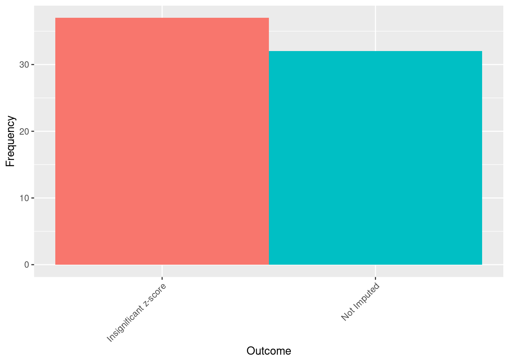
locus_plot("2_117", label="TWAS")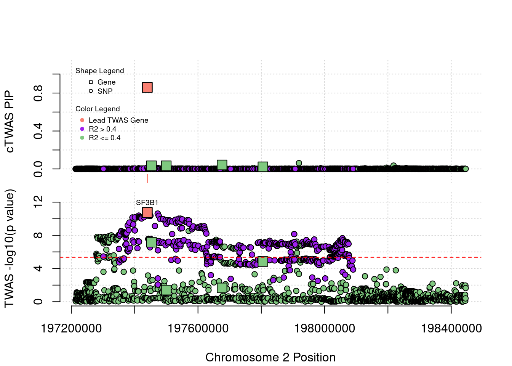
locus_plot("17_27", label="TWAS")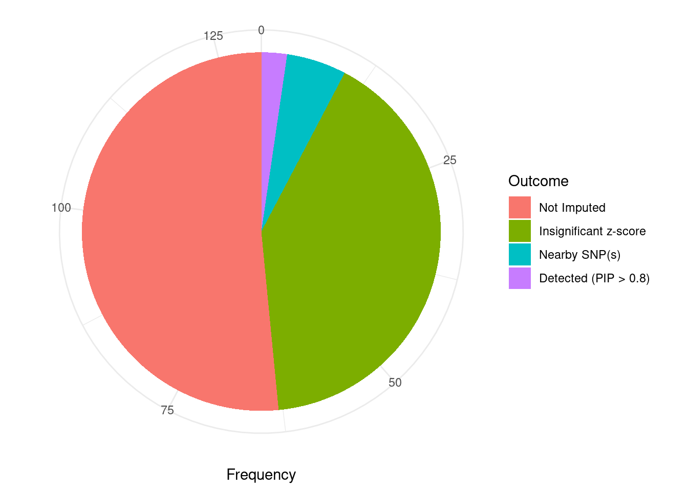
| Version | Author | Date |
|---|---|---|
| 35c93ea | sq-96 | 2022-03-02 |
locus_plot("19_10", label="TWAS")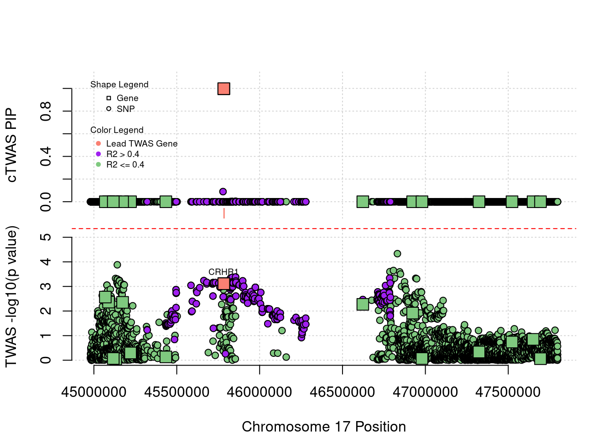
| Version | Author | Date |
|---|---|---|
| 35c93ea | sq-96 | 2022-03-02 |
locus_plot("15_42", label="TWAS")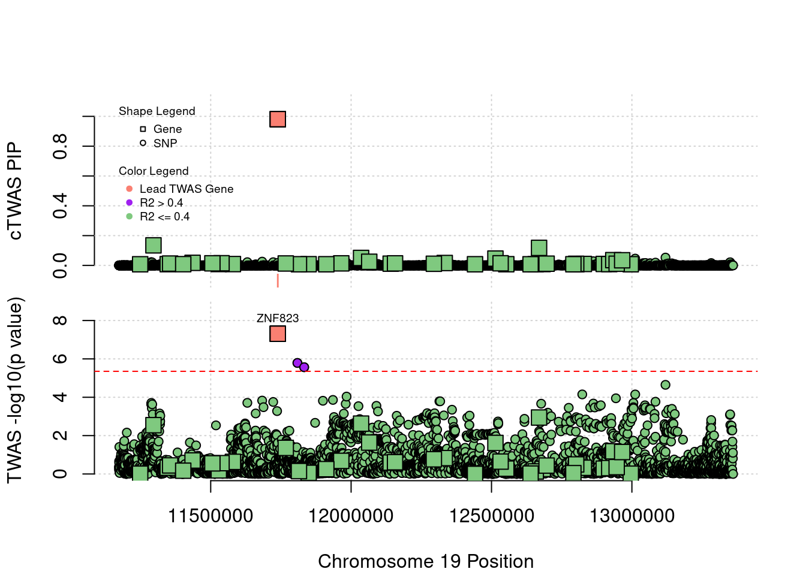
| Version | Author | Date |
|---|---|---|
| 35c93ea | sq-96 | 2022-03-02 |
locus_plot5("19_34", focus="IRF3")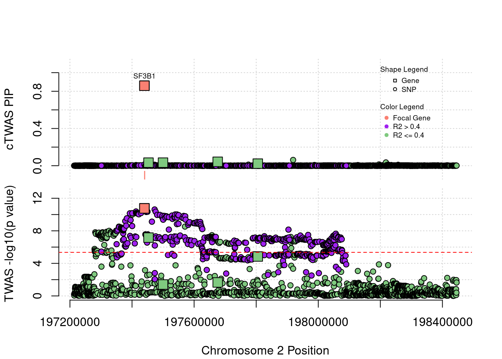
| Version | Author | Date |
|---|---|---|
| 35c93ea | sq-96 | 2022-03-02 |
sessionInfo()R version 3.6.1 (2019-07-05)
Platform: x86_64-pc-linux-gnu (64-bit)
Running under: Scientific Linux 7.4 (Nitrogen)
Matrix products: default
BLAS/LAPACK: /software/openblas-0.2.19-el7-x86_64/lib/libopenblas_haswellp-r0.2.19.so
locale:
[1] LC_CTYPE=en_US.UTF-8 LC_NUMERIC=C
[3] LC_TIME=en_US.UTF-8 LC_COLLATE=en_US.UTF-8
[5] LC_MONETARY=en_US.UTF-8 LC_MESSAGES=en_US.UTF-8
[7] LC_PAPER=en_US.UTF-8 LC_NAME=C
[9] LC_ADDRESS=C LC_TELEPHONE=C
[11] LC_MEASUREMENT=en_US.UTF-8 LC_IDENTIFICATION=C
attached base packages:
[1] stats graphics grDevices utils datasets methods base
other attached packages:
[1] readxl_1.3.1 forcats_0.5.1 stringr_1.4.0 dplyr_1.0.7
[5] purrr_0.3.4 readr_2.1.1 tidyr_1.1.4 tidyverse_1.3.1
[9] tibble_3.1.6 WebGestaltR_0.4.4 disgenet2r_0.99.2 enrichR_3.0
[13] cowplot_1.0.0 ggplot2_3.3.5 workflowr_1.7.0
loaded via a namespace (and not attached):
[1] fs_1.5.2 lubridate_1.8.0 bit64_4.0.5 doParallel_1.0.17
[5] httr_1.4.2 rprojroot_2.0.2 tools_3.6.1 backports_1.4.1
[9] doRNG_1.8.2 utf8_1.2.2 R6_2.5.1 vipor_0.4.5
[13] DBI_1.1.2 colorspace_2.0-2 withr_2.4.3 ggrastr_1.0.1
[17] tidyselect_1.1.1 processx_3.5.2 bit_4.0.4 curl_4.3.2
[21] compiler_3.6.1 git2r_0.26.1 rvest_1.0.2 cli_3.1.0
[25] Cairo_1.5-12.2 xml2_1.3.3 labeling_0.4.2 scales_1.1.1
[29] callr_3.7.0 apcluster_1.4.8 digest_0.6.29 rmarkdown_2.11
[33] svglite_1.2.2 pkgconfig_2.0.3 htmltools_0.5.2 dbplyr_2.1.1
[37] fastmap_1.1.0 highr_0.9 rlang_1.0.1 rstudioapi_0.13
[41] RSQLite_2.2.8 jquerylib_0.1.4 farver_2.1.0 generics_0.1.1
[45] jsonlite_1.7.2 vroom_1.5.7 magrittr_2.0.2 Matrix_1.2-18
[49] ggbeeswarm_0.6.0 Rcpp_1.0.8 munsell_0.5.0 fansi_1.0.2
[53] gdtools_0.1.9 lifecycle_1.0.1 stringi_1.7.6 whisker_0.3-2
[57] yaml_2.2.1 plyr_1.8.6 grid_3.6.1 blob_1.2.2
[61] ggrepel_0.9.1 parallel_3.6.1 promises_1.0.1 crayon_1.5.0
[65] lattice_0.20-38 haven_2.4.3 hms_1.1.1 knitr_1.36
[69] ps_1.6.0 pillar_1.6.4 igraph_1.2.10 rjson_0.2.20
[73] rngtools_1.5.2 reshape2_1.4.4 codetools_0.2-16 reprex_2.0.1
[77] glue_1.6.2 evaluate_0.14 getPass_0.2-2 modelr_0.1.8
[81] data.table_1.14.2 vctrs_0.3.8 tzdb_0.2.0 httpuv_1.5.1
[85] foreach_1.5.2 cellranger_1.1.0 gtable_0.3.0 assertthat_0.2.1
[89] cachem_1.0.6 xfun_0.29 broom_0.7.10 later_0.8.0
[93] iterators_1.0.14 beeswarm_0.2.3 memoise_2.0.1 ellipsis_0.3.2